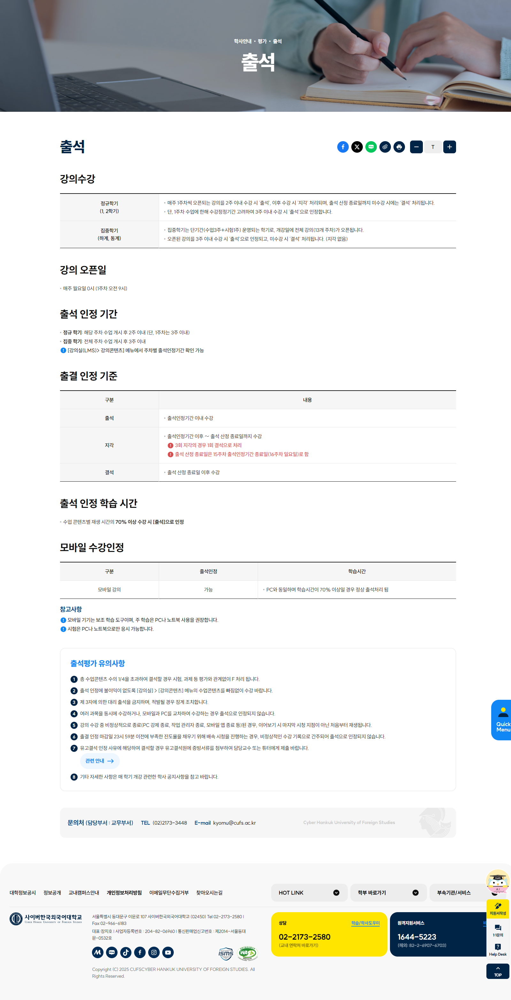
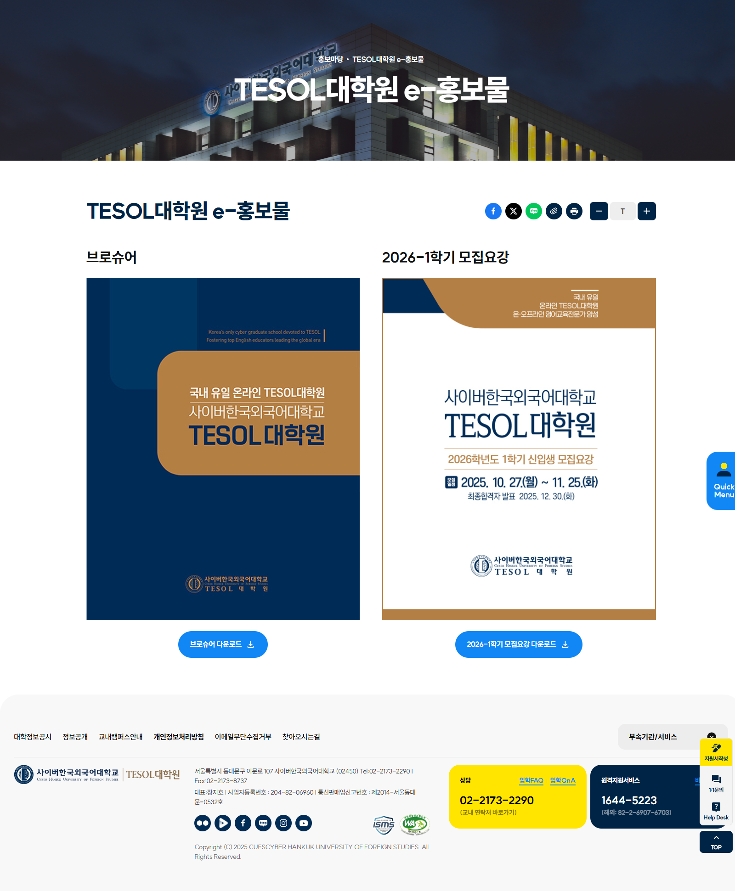
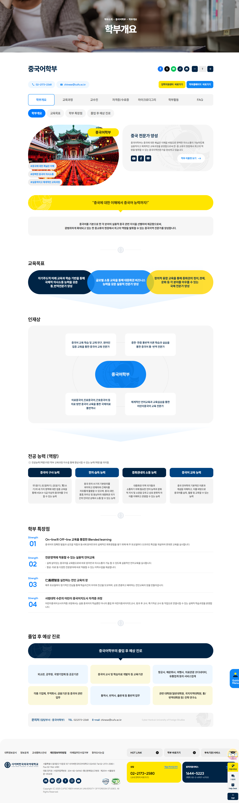
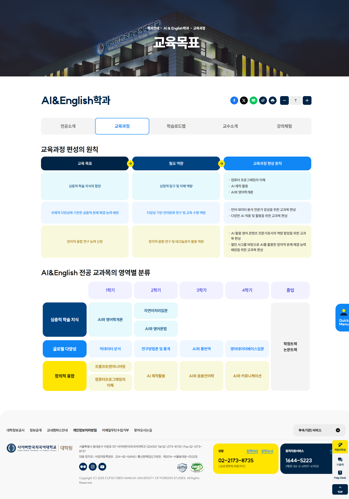

CUFS
- YEAR
- 02 2025
- DURATION
-
- 2 weeks of production
- 6 days of maintenance
- FIELDS
-
- TEAM PROJECT
- PUBLISHING
- MARKUP
- CMS
- VS
- SCSS
- HOW I WORKED ON IT
-
사이버한국외국어대학교는 국내 유일의 외국어 특성화 사이버대학교입니다. 변화하는 사용자 환경에 맞춰 정보 구조 개선, 반응형 웹 구현, 브랜드 톤 강화로 젊고 활기찬 아이덴티티로 바뀌게 되었습니다. 또한, 웹 접근성 인증과 정보보호 관리체계 인증 통과를 위한 기술적 요소를 함께 설계했습니다.
#OVERVIEW
공공기관 특유의 딱딱한 이미지를 벗어나 컬러, 폰트 등 비주얼적인 요소를 전체적으로 재정비한 모습입니다.
변화하는 사용자 환경에 맞춰 반응형 웹으로 구성했으며 복잡한 인증·평가 정보 구조를 직관적으로 재구성해 이용자의 접근을 개선했습니다.
또한 웹 접근성 표준을 충족하고, 정보보호 관리체계 인증을 고려한 기술적 요소를 함께 설계했습니다.

Cyber Hankuk
University
of Foreign
Studies
your future
begins.
#PROJECT_STRATEGY
사용자와 운영 측의 니즈를 바탕으로, UX 전반의 개선을 위한 네 가지 전략을 수립하였습니다.
정보 구조, 디자인 언어, 반응형 환경, 접근성 측면에서 일관된 경험을 제공하는 데 중점을 두었고,
대규모 프로젝트인 만큼 작업자들과 함께 협업 전 전략을 숙지하였습니다.
- Information Clarity 명확한 정보 구조 설계
- 사용자가 쉽게 이해하고 탐색할 수 있도록 명확한 시각적 계층 구조를 구현
- Visual Language System 시각적 언어 시스템 개발
- 언어 장벽을 넘어서는 커뮤니케이션을 가능하게 하고, 이를 통해 대학의 글로벌 아이덴티티 강화
- Responsive Experience 반응형 환경 최적화
- 다양한 디바이스에서도 일관된 사용 경험을 제공할 수 있도록 유연한 레이아웃 구성
- Inclusive Accessibility 글로벌 사용자를 위한 포용적 설계
- 다양한 문화적 배경 및 장애를 가진 사용자들도 쉽게 접근하도록 WCAG 가이드라인을 준수하여 설계
#DESIGN_SYSTEM
사이버 환경에서의 탐색을 상징하는 Cursor, 언어를 매개로 한 소통을 표현하는 Speech Bubble.
두 요소를 결합해, 외국어 특성화 사이버대학만의 시각 언어를 구축했습니다.
브랜드 메시지 ‘Speak your future’를 중심으로, 사용자의 경험과 대학의 정체성을 하나의 비주얼로 연결합니다.
#WORK_FLOW
대규모 작업이였던 만큼 서브를 분야별로 갈라 각자 작업했으며,
메인 작업자가 컴파일 시 코드를 확인하고 반복되는 부분을 병합하고 복잡한 구조의 코드는 단순화 하는 작업을 진행했습니다.
작업이 마무리 된 이후에 구조화 된 코드는 다같이 확인해가며 피드백하며 설명하는 시간을 가졌습니다.

#SITE_PREVIEW
-

-

-

-

-

-
